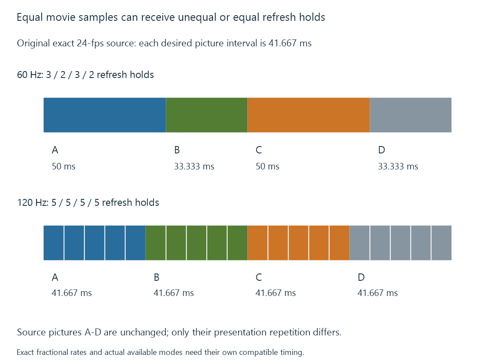

Frame-rate matching at the display
Frame-rate matching selects a display timing compatible with the source cadence so source pictures can receive regular presentation durations.
A player needs to place each source picture onto the available presentation schedule. Frame-rate matching selects an output timing that makes that relationship regular.
Matching can use the source rate itself or a suitable integer multiple. A 24-fps film does not require the physical display to refresh only twenty-four times per second.
Why sixty refreshes are awkward for twenty-four pictures
Take an original exact-rate exercise. Twenty-four source pictures per second need to occupy sixty refresh intervals:
60 / 24 = 2.5 refreshes per source picture
A fixed presentation cannot hold every picture for half an additional refresh. A common repeat schedule alternates three and two intervals.
At sixty Hz, those holds are 50 and 33.333 milliseconds. The intended source interval is 41.667 milliseconds. The average duration is right, while each neighbouring hold differs.
At 120 Hz:
120 / 24 = 5 refreshes per source picture
5 / 120 = 1 / 24 second
Every picture can receive the same duration without synthesizing another source picture.

That removes the unequal-repeat contribution to judder. It does not remove the discrete motion sampling already present in twenty-four-fps footage.
Exact rates matter beyond the rounded label
Consider a 24000/1001-fps movie presented with one source picture per refresh on an exact 24-Hz grid.
The source interval is 1001/24000 seconds; the display interval is 1/24 seconds. The difference per source picture is:
1001/24000 − 1/24 = 1/24000 second
= 0.041667 ms
After 1000 pictures, that difference totals one exact 24-Hz refresh interval: 41.667 milliseconds.
If the programme speed stays unchanged, the presentation system must accommodate the growing mismatch. It can make a repeat/drop or another scheduling correction according to its implementation. This exercise does not predict the exact moment a particular player performs that correction.
Using 24000/1001 Hz, or its exact fivefold multiple 120000/1001 Hz, removes this particular clock mismatch. “24” and “120” in a menu can be rounded displays of a more precise mode, so the actual rate is the useful evidence.
Fractional frame rates explains the source conventions.
Other source rates need their own mapping
| Exact source | Example fixed output | Even repeat count |
|---|---|---|
| 24 fps | 120 Hz | 5 |
| 25 fps | 50 Hz | 2 |
| 30 fps | 60 Hz | 2 |
| 50 fps | 100 Hz | 2 |
| 60 fps | 120 Hz | 2 |
The table is arithmetic, not a promise that a connected TV exposes every mode. Resolution, color representation, link capability and the device’s mode list constrain which choices exist.
Variable-frame-rate content has a changing source interval. One fixed repeat count cannot describe its whole sequence. A variable presentation arrangement or timed repeats may be needed.
Changing playback speed is another solution with another result
A player can sometimes conform source timing to a nearby rate by changing programme speed. Conforming 24000/1001 fps to 24 fps requires a speed ratio of 1001/1000, a 0.1% increase.
That avoids this cadence drift by changing playback duration. Audio must participate in the intended timing relationship; maintaining pitch can require additional processing.
It is not the same result as preserving programme timing and correcting an occasional presentation interval. An explanation of smooth motion should state which choice occurred.
Motion interpolation is another distinct option. It estimates additional pictures rather than simply repeating the original ones evenly.
Emby switching needs a supported local route
Emby’s documented Display Control feature detects available display rates and can switch rates when enabled on its supported application route. Its options depend on the GPU, connection, resolution and color mode.
That is a local output-mode operation. It does not require the server to turn the movie into a different source frame rate merely because the client changes its display timing.
A mode change can briefly re-establish the connection, producing a blackout. Quick Media Switching addresses a narrower supported rate-change case; it does not make every resolution or HDR change seamless.
See Also
- Display refresh rate
- Judder and uneven picture cadence
- Fractional Frame Rates: 23.976, 29.97, and 59.94
- Quick Media Switching (QMS)